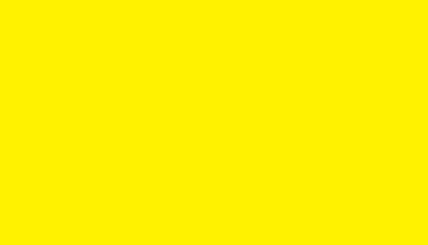
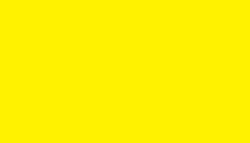
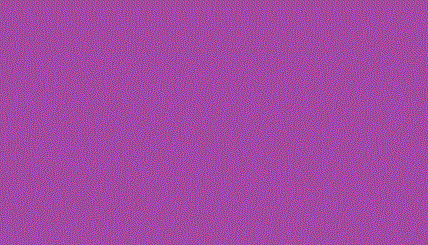

La teoría del color es un conjunto de reglas y pautas que los diseñadores utilizan para comunicar con los colores de manera visualmente atractiva.
Los colores se clasifican en colores primarios, colores secundarios y colores terciarios.
Los colores afectan la percepción del diseño y también influyen en el estado de ánimo. © 2025
Los colores se clasifican en colores primarios, colores secundarios y colores terciarios.
Colores primarios: rojo, azul y amarillo.
 

Colores secundarios: se forman al mezclar dos colores primarios.
El uso adecuado del color puede influir en las emociones y percepciones de las personas, por eso es una herramienta muy poderosa en diseño gráfico, arte y publicidad.
Texto Azul
| Formato | Prof. Color | Animación | Transparencia |
|---|---|---|---|
| .gif | 8 bits | Sí | Sí |
| .jpg | 24 bits | No | No |
| .png | 32 bits (24+8) | No | Sí |
| Tipo de color | Ejemplos |
|---|---|
| Primarios |
Rojo, Amarillo, Azul
|
| Psicología del color | Psicología del color |